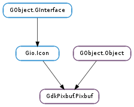

| static | from_pixdata(pixdata, copy_pixels) |
| static | get_file_info(filename) |
| static | get_formats() |
| static | gettext(msgid) |
| static | new(colorspace, has_alpha, bits_per_sample, width, height) |
| static | new_from_data(data, colorspace, has_alpha, bits_per_sample, width, height, rowstride, destroy_fn, ...) |
| static | new_from_file(filename) |
| static | new_from_file_at_scale(filename, width, height, preserve_aspect_ratio) |
| static | new_from_file_at_size(filename, width, height) |
| static | new_from_inline(data, copy_pixels) |
| static | new_from_resource(resource_path) |
| static | new_from_resource_at_scale(resource_path, width, height, preserve_aspect_ratio) |
| static | new_from_stream(stream, cancellable) |
| static | new_from_stream_async(stream, cancellable, callback, *user_data) |
| static | new_from_stream_at_scale(stream, width, height, preserve_aspect_ratio, cancellable) |
| static | new_from_stream_at_scale_async(stream, width, height, preserve_aspect_ratio, cancellable, callback, *user_data) |
| static | new_from_stream_finish(async_result) |
| static | new_from_xpm_data(data) |
| static | save_to_stream_finish(async_result) |
| add_alpha(substitute_color, r, g, b) | |
| apply_embedded_orientation() | |
| composite(dest, dest_x, dest_y, dest_width, dest_height, offset_x, offset_y, scale_x, scale_y, ...) | |
| composite_color(dest, dest_x, dest_y, dest_width, dest_height, offset_x, offset_y, scale_x, scale_y, ...) | |
| composite_color_simple(dest_width, dest_height, interp_type, overall_alpha, check_size, color1, color2) | |
| copy() | |
| copy_area(src_x, src_y, width, height, dest_pixbuf, dest_x, dest_y) | |
| fill(pixel) | |
| flip(horizontal) | |
| get_bits_per_sample() | |
| get_byte_length() | |
| get_colorspace() | |
| get_has_alpha() | |
| get_height() | |
| get_n_channels() | |
| get_option(key) | |
| get_pixels() | |
| get_rowstride() | |
| get_width() | |
| new_subpixbuf(src_x, src_y, width, height) | |
| rotate_simple(angle) | |
| saturate_and_pixelate(dest, saturation, pixelate) | |
| save_to_bufferv(type, option_keys, option_values) | |
| save_to_callbackv(save_func, user_data, type, option_keys, option_values) | |
| savev(filename, type, option_keys, option_values) | |
| scale(dest, dest_x, dest_y, dest_width, dest_height, offset_x, offset_y, scale_x, scale_y, interp_type) | |
| scale_simple(dest_width, dest_height, interp_type) |
| Name | Type | Flags | Description |
|---|---|---|---|
| bits-per-sample | int | r/w/c | The number of bits per sample |
| colorspace | GdkPixbuf.Colorspace | r/w/c | The colorspace in which the samples are interpreted |
| has-alpha | bool | r/w/c | Whether the pixbuf has an alpha channel |
| height | int | r/w/c | The number of rows of the pixbuf |
| n-channels | int | r/w/c | The number of samples per pixel |
| pixels | int | r/w/c | A pointer to the pixel data of the pixbuf |
| rowstride | int | r/w/c | The number of bytes between the start of a row and the start of the next row |
| width | int | r/w/c | The number of columns of the pixbuf |
None
Bases: GObject.Object, Gio.Icon
This is the main structure in the &gdk-pixbuf library. It is used to represent images. It contains information about the image’s pixel data, its color space, bits per sample, width and height, and the rowstride (the number of bytes between the start of one row and the start of the next).
| Parameters: |
|
|---|---|
| Raises: | |
| Returns: | a new GdkPixbuf.Pixbuf. |
| Return type: |
Converts a GdkPixbuf.Pixdata to a GdkPixbuf.Pixbuf. If copy_pixels is True or if the pixel data is run-length-encoded, the pixel data is copied into newly-allocated memory; otherwise it is reused.
| Parameters: | filename (str) – The name of the file to identify. |
|---|---|
| Returns: | A GdkPixbuf.PixbufFormat describing the image format of the file or None if the image format wasn’t recognized. The return value is owned by GdkPixbuf.Pixbuf and should not be freed. |
| Return type: | GdkPixbuf.PixbufFormat, width: int, height: int |
Parses an image file far enough to determine its format and size.
| Returns: | A list of GdkPixbuf.PixbufFormat s describing the supported image formats. The list should be freed when it is no longer needed, but the structures themselves are owned by GdkPixbuf.Pixbuf and should not be freed. |
|---|---|
| Return type: | [GdkPixbuf.PixbufFormat] |
Obtains the available information about the image formats supported by GdkPixbuf.Pixbuf.
| Parameters: |
|
|---|---|
| Returns: | A newly-created GdkPixbuf.Pixbuf with a reference count of 1, or None if not enough memory could be allocated for the image buffer. |
| Return type: |
Creates a new GdkPixbuf.Pixbuf structure and allocates a buffer for it. The buffer has an optimal rowstride. Note that the buffer is not cleared; you will have to fill it completely yourself.
| Parameters: |
|
|---|---|
| Returns: | A newly-created GdkPixbuf.Pixbuf structure with a reference count of 1. |
| Return type: |
Creates a new GdkPixbuf.Pixbuf out of in-memory image data. Currently only RGB images with 8 bits per sample are supported.
| Parameters: | filename (str) – Name of file to load, in the GLib file name encoding |
|---|---|
| Raises: | GLib.GError |
| Returns: | A newly-created pixbuf with a reference count of 1, or None if any of several error conditions occurred: the file could not be opened, there was no loader for the file’s format, there was not enough memory to allocate the image buffer, or the image file contained invalid data. |
| Return type: | GdkPixbuf.Pixbuf |
Creates a new pixbuf by loading an image from a file. The file format is detected automatically. If None is returned, then error will be set. Possible errors are in the #GDK_PIXBUF_ERROR and #G_FILE_ERROR domains.
| Parameters: |
|
|---|---|
| Raises: | |
| Returns: | A newly-created pixbuf with a reference count of 1, or None if any of several error conditions occurred: the file could not be opened, there was no loader for the file’s format, there was not enough memory to allocate the image buffer, or the image file contained invalid data. |
| Return type: |
Creates a new pixbuf by loading an image from a file. The file format is detected automatically. If None is returned, then error will be set. Possible errors are in the #GDK_PIXBUF_ERROR and #G_FILE_ERROR domains. The image will be scaled to fit in the requested size, optionally preserving the image’s aspect ratio.
When preserving the aspect ratio, a width of -1 will cause the image to be scaled to the exact given height, and a height of -1 will cause the image to be scaled to the exact given width. When not preserving aspect ratio, a width or height of -1 means to not scale the image at all in that dimension. Negative values for width and height are allowed since 2.8.
| Parameters: | |
|---|---|
| Raises: | |
| Returns: | A newly-created pixbuf with a reference count of 1, or None if any of several error conditions occurred: the file could not be opened, there was no loader for the file’s format, there was not enough memory to allocate the image buffer, or the image file contained invalid data. |
| Return type: |
Creates a new pixbuf by loading an image from a file. The file format is detected automatically. If None is returned, then error will be set. Possible errors are in the #GDK_PIXBUF_ERROR and #G_FILE_ERROR domains.
The image will be scaled to fit in the requested size, preserving the image’s aspect ratio. Note that the returned pixbuf may be smaller than width x height, if the aspect ratio requires it. To load and image at the requested size, regardless of aspect ratio, use GdkPixbuf.Pixbuf.new_from_file_at_scale ().
| Parameters: |
|
|---|---|
| Raises: | |
| Returns: | A newly-created GdkPixbuf.Pixbuf structure with a reference, count of 1, or None if an error occurred. |
| Return type: |
Create a GdkPixbuf.Pixbuf from a flat representation that is suitable for storing as inline data in a program. This is useful if you want to ship a program with images, but don’t want to depend on any external files.
gdk-pixbuf ships with a program called gdk-pixbuf-csource which allows for conversion of GdkPixbuf.Pixbufs into such a inline representation. In almost all cases, you should pass the –raw flag to gdk-pixbuf-csource. A sample invocation would be:
gdk-pixbuf-csource --raw --name=myimage_inline myimage.png
For the typical case where the inline pixbuf is read-only static data, you don’t need to copy the pixel data unless you intend to write to it, so you can pass False for copy_pixels. (If you pass –rle to gdk-pixbuf-csource, a copy will be made even if copy_pixels is False, so using this option is generally a bad idea.)
If you create a pixbuf from const inline data compiled into your program, it’s probably safe to ignore errors and disable length checks, since things will always succeed: pixbuf = gdk_pixbuf_new_from_inline (-1, myimage_inline, FALSE, NULL);
For non-const inline data, you could get out of memory. For untrusted inline data located at runtime, you could have corrupt inline data in addition.
| Parameters: | resource_path (str) – the path of the resource file |
|---|---|
| Raises: | GLib.GError |
| Returns: | A newly-created pixbuf, or None if any of several error conditions occurred: the file could not be opened, the image format is not supported, there was not enough memory to allocate the image buffer, the stream contained invalid data, or the operation was cancelled. |
| Return type: | GdkPixbuf.Pixbuf |
Creates a new pixbuf by loading an image from an resource.
The file format is detected automatically. If None is returned, then error will be set.
| Parameters: | |
|---|---|
| Raises: | |
| Returns: | A newly-created pixbuf, or None if any of several error conditions occurred: the file could not be opened, the image format is not supported, there was not enough memory to allocate the image buffer, the stream contained invalid data, or the operation was cancelled. |
| Return type: |
Creates a new pixbuf by loading an image from an resource.
The file format is detected automatically. If None is returned, then error will be set.
The image will be scaled to fit in the requested size, optionally preserving the image’s aspect ratio. When preserving the aspect ratio, a width of -1 will cause the image to be scaled to the exact given height, and a height of -1 will cause the image to be scaled to the exact given width. When not preserving aspect ratio, a width or height of -1 means to not scale the image at all in that dimension.
The stream is not closed.
| Parameters: |
|
|---|---|
| Raises: | |
| Returns: | A newly-created pixbuf, or None if any of several error conditions occurred: the file could not be opened, the image format is not supported, there was not enough memory to allocate the image buffer, the stream contained invalid data, or the operation was cancelled. |
| Return type: |
Creates a new pixbuf by loading an image from an input stream.
The file format is detected automatically. If None is returned, then error will be set. The cancellable can be used to abort the operation from another thread. If the operation was cancelled, the error Gio.IOErrorEnum.CANCELLED will be returned. Other possible errors are in the #GDK_PIXBUF_ERROR and %G_IO_ERROR domains.
The stream is not closed.
| Parameters: |
|
|---|
Creates a new pixbuf by asynchronously loading an image from an input stream.
For more details see GdkPixbuf.Pixbuf.new_from_stream (), which is the synchronous version of this function.
When the operation is finished, callback will be called in the main thread. You can then call GdkPixbuf.Pixbuf.new_from_stream_finish () to get the result of the operation.
| Parameters: |
|
|---|---|
| Raises: | |
| Returns: | A newly-created pixbuf, or None if any of several error conditions occurred: the file could not be opened, the image format is not supported, there was not enough memory to allocate the image buffer, the stream contained invalid data, or the operation was cancelled. |
| Return type: |
Creates a new pixbuf by loading an image from an input stream.
The file format is detected automatically. If None is returned, then error will be set. The cancellable can be used to abort the operation from another thread. If the operation was cancelled, the error Gio.IOErrorEnum.CANCELLED will be returned. Other possible errors are in the #GDK_PIXBUF_ERROR and %G_IO_ERROR domains.
The image will be scaled to fit in the requested size, optionally preserving the image’s aspect ratio. When preserving the aspect ratio, a width of -1 will cause the image to be scaled to the exact given height, and a height of -1 will cause the image to be scaled to the exact given width. When not preserving aspect ratio, a width or height of -1 means to not scale the image at all in that dimension.
The stream is not closed.
| Parameters: |
|
|---|
Creates a new pixbuf by asynchronously loading an image from an input stream.
For more details see GdkPixbuf.Pixbuf.new_from_stream_at_scale (), which is the synchronous version of this function.
When the operation is finished, callback will be called in the main thread. You can then call GdkPixbuf.Pixbuf.new_from_stream_finish () to get the result of the operation.
| Parameters: | async_result (Gio.AsyncResult) – a Gio.AsyncResult |
|---|---|
| Raises: | GLib.GError |
| Returns: | a GdkPixbuf.Pixbuf or None on error. Free the returned object with GObject.Object.unref (). |
| Return type: | GdkPixbuf.Pixbuf |
Finishes an asynchronous pixbuf creation operation started with GdkPixbuf.Pixbuf.new_from_stream_async ().
| Parameters: | data ([str]) – Pointer to inline XPM data. |
|---|---|
| Returns: | A newly-created pixbuf with a reference count of 1. |
| Return type: | GdkPixbuf.Pixbuf |
Creates a new pixbuf by parsing XPM data in memory. This data is commonly the result of including an XPM file into a program’s C source.
| Parameters: | async_result (Gio.AsyncResult) – a Gio.AsyncResult |
|---|---|
| Raises: | GLib.GError |
| Returns: | True if the pixbuf was saved successfully, False if an error was set. |
| Return type: | bool |
Finishes an asynchronous pixbuf save operation started with GdkPixbuf.Pixbuf.save_to_stream_async ().
| Parameters: | |
|---|---|
| Returns: | A newly-created pixbuf with a reference count of 1. |
| Return type: |
Takes an existing pixbuf and adds an alpha channel to it. If the existing pixbuf already had an alpha channel, the channel values are copied from the original; otherwise, the alpha channel is initialized to 255 (full opacity).
If substitute_color is True, then the color specified by (r, g, b ) will be assigned zero opacity. That is, if you pass (255, 255, 255) for the substitute color, all white pixels will become fully transparent.
| Returns: | A newly-created pixbuf, or a reference to the input pixbuf (with an increased reference count). |
|---|---|
| Return type: | GdkPixbuf.Pixbuf |
Takes an existing pixbuf and checks for the presence of an associated “orientation” option, which may be provided by the jpeg loader (which reads the exif orientation tag) or the tiff loader (which reads the tiff orientation tag, and compensates it for the partial transforms performed by libtiff). If an orientation option/tag is present, the appropriate transform will be performed so that the pixbuf is oriented correctly.
| Parameters: |
|
|---|
Creates a transformation of the source image src by scaling by scale_x and scale_y then translating by offset_x and offset_y. This gives an image in the coordinates of the destination pixbuf. The rectangle (dest_x, dest_y, dest_width, dest_height ) is then composited onto the corresponding rectangle of the original destination image.
When the destination rectangle contains parts not in the source image, the data at the edges of the source image is replicated to infinity.
Compositing of pixbufs
| Parameters: |
|
|---|
Creates a transformation of the source image src by scaling by scale_x and scale_y then translating by offset_x and offset_y, then composites the rectangle (dest_x ,`dest_y`, dest_width, dest_height ) of the resulting image with a checkboard of the colors color1 and color2 and renders it onto the destination image.
See GdkPixbuf.Pixbuf.composite_color_simple () for a simpler variant of this function suitable for many tasks.
| Parameters: |
|
|---|---|
| Returns: | the new GdkPixbuf.Pixbuf, or None if not enough memory could be allocated for it. |
| Return type: |
Creates a new GdkPixbuf.Pixbuf by scaling src to dest_width x dest_height and compositing the result with a checkboard of colors color1 and color2.
| Returns: | A newly-created pixbuf with a reference count of 1, or None if not enough memory could be allocated. |
|---|---|
| Return type: | GdkPixbuf.Pixbuf |
Creates a new GdkPixbuf.Pixbuf with a copy of the information in the specified pixbuf.
| Parameters: |
|
|---|
Copies a rectangular area from src_pixbuf to dest_pixbuf. Conversion of pixbuf formats is done automatically.
If the source rectangle overlaps the destination rectangle on the same pixbuf, it will be overwritten during the copy operation. Therefore, you can not use this function to scroll a pixbuf.
| Parameters: | pixel (int) – RGBA pixel to clear to (0xffffffff is opaque white, 0x00000000 transparent black) |
|---|
Clears a pixbuf to the given RGBA value, converting the RGBA value into the pixbuf’s pixel format. The alpha will be ignored if the pixbuf doesn’t have an alpha channel.
| Parameters: | horizontal (bool) – True to flip horizontally, False to flip vertically |
|---|---|
| Returns: | the new GdkPixbuf.Pixbuf, or None if not enough memory could be allocated for it. |
| Return type: | GdkPixbuf.Pixbuf |
Flips a pixbuf horizontally or vertically and returns the result in a new pixbuf.
| Returns: | Number of bits per color sample. |
|---|---|
| Return type: | int |
Queries the number of bits per color sample in a pixbuf.
| Returns: | The length of the pixel data. |
|---|---|
| Return type: | int |
Returns the length of the pixel data, in bytes.
| Returns: | Color space. |
|---|---|
| Return type: | GdkPixbuf.Colorspace |
Queries the color space of a pixbuf.
| Returns: | True if it has an alpha channel, False otherwise. |
|---|---|
| Return type: | bool |
Queries whether a pixbuf has an alpha channel (opacity information).
| Returns: | Number of channels. |
|---|---|
| Return type: | int |
Queries the number of channels of a pixbuf.
| Parameters: | key (str) – a nul-terminated string. |
|---|---|
| Returns: | the value associated with key. This is a nul-terminated string that should not be freed or None if key was not found. |
| Return type: | str |
Looks up key in the list of options that may have been attached to the pixbuf when it was loaded, or that may have been attached by another function using gdk_pixbuf_set_option().
For instance, the ANI loader provides “Title” and “Artist” options. The ICO, XBM, and XPM loaders provide “x_hot” and “y_hot” hot-spot options for cursor definitions. The PNG loader provides the tEXt ancillary chunk key/value pairs as options. Since 2.12, the TIFF and JPEG loaders return an “orientation” option string that corresponds to the embedded TIFF/Exif orientation tag (if present).
| Returns: | A pointer to the pixbuf’s pixel data. Please see for information about how the pixel data is stored in memory. |
|---|---|
| Return type: | [int] |
Queries a pointer to the pixel data of a pixbuf.
| Returns: | Distance between row starts. |
|---|---|
| Return type: | int |
Queries the rowstride of a pixbuf, which is the number of bytes between the start of a row and the start of the next row.
| Parameters: | |
|---|---|
| Returns: | a new pixbuf |
| Return type: |
Creates a new pixbuf which represents a sub-region of src_pixbuf. The new pixbuf shares its pixels with the original pixbuf, so writing to one affects both. The new pixbuf holds a reference to src_pixbuf, so src_pixbuf will not be finalized until the new pixbuf is finalized.
| Parameters: | angle (GdkPixbuf.PixbufRotation) – the angle to rotate by |
|---|---|
| Returns: | the new GdkPixbuf.Pixbuf, or None if not enough memory could be allocated for it. |
| Return type: | GdkPixbuf.Pixbuf |
Rotates a pixbuf by a multiple of 90 degrees, and returns the result in a new pixbuf.
| Parameters: |
|
|---|
Modifies saturation and optionally pixelates src, placing the result in dest. src and dest may be the same pixbuf with no ill effects. If saturation is 1.0 then saturation is not changed. If it’s less than 1.0, saturation is reduced (the image turns toward grayscale); if greater than 1.0, saturation is increased (the image gets more vivid colors). If pixelate is True, then pixels are faded in a checkerboard pattern to create a pixelated image. src and dest must have the same image format, size, and rowstride.
| Parameters: | |
|---|---|
| Raises: | |
| Returns: | whether an error was set |
| Return type: |
Saves pixbuf to a new buffer in format type, which is currently “jpeg”, “tiff”, “png”, “ico” or “bmp”. See GdkPixbuf.Pixbuf.save_to_buffer () for more details.
| Parameters: |
|
|---|---|
| Raises: | |
| Returns: | whether an error was set |
| Return type: |
Saves pixbuf to a callback in format type, which is currently “jpeg”, “png”, “tiff”, “ico” or “bmp”. If error is set, False will be returned. See GdkPixbuf.Pixbuf.save_to_callback () for more details.
| Parameters: | |
|---|---|
| Raises: | |
| Returns: | whether an error was set |
| Return type: |
Saves pixbuf to a file in type, which is currently “jpeg”, “png”, “tiff”, “ico” or “bmp”. If error is set, False will be returned. See GdkPixbuf.Pixbuf.save () for more details.
| Parameters: |
|
|---|
Creates a transformation of the source image src by scaling by scale_x and scale_y then translating by offset_x and offset_y, then renders the rectangle (dest_x, dest_y, dest_width, dest_height ) of the resulting image onto the destination image replacing the previous contents.
Try to use GdkPixbuf.Pixbuf.scale_simple () first, this function is the industrial-strength power tool you can fall back to if GdkPixbuf.Pixbuf.scale_simple () isn’t powerful enough.
If the source rectangle overlaps the destination rectangle on the same pixbuf, it will be overwritten during the scaling which results in rendering artifacts.
| Parameters: |
|
|---|---|
| Returns: | the new GdkPixbuf.Pixbuf, or None if not enough memory could be allocated for it. |
| Return type: |
Create a new GdkPixbuf.Pixbuf containing a copy of src scaled to dest_width x dest_height. Leaves src unaffected. interp_type should be GdkPixbuf.InterpType.NEAREST if you want maximum speed (but when scaling down GdkPixbuf.InterpType.NEAREST is usually unusably ugly). The default interp_type should be GdkPixbuf.InterpType.BILINEAR which offers reasonable quality and speed.
You can scale a sub-portion of src by creating a sub-pixbuf pointing into src ; see GdkPixbuf.Pixbuf.new_subpixbuf ().
For more complicated scaling/compositing see GdkPixbuf.Pixbuf.scale () and GdkPixbuf.Pixbuf.composite ().